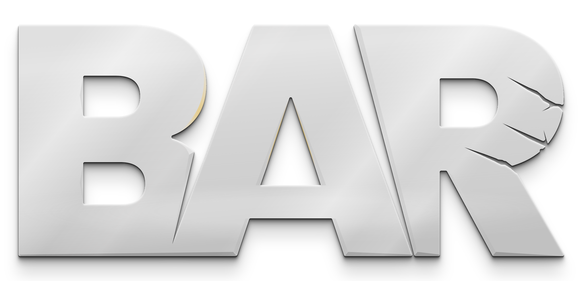

Everything built for the Beyond All Reason content-creation project, in one place. These links open the actual local files directly — no server needed, just double-click index.html in each folder if a link doesn't open your browser automatically. Data/code tools are for Claude to draw on; visual tools are for direct use.
Pick units from the database to add to a lab/printer/commander's buildoptions. Generates correctly-encoded Lua ready to paste into the game.
957 real units parsed from the game's own source. Faction-organized (Armada/Cortex/Legion/Raptors/Scavengers), visual, searchable. Run check-for-updates.js to detect new game content.
Visual, no-code view of everything custom found across the project (107 cards from 159 items) — real in-game icons, names, descriptions, with faction equivalents (Armada/Cortex/Legion) grouped into one card. Now data-driven from the Content Gallery dataset instead of hand-curated.
Scans all 710 of your local game replays, decodes each one's tweakdefs/tweakunits, and surfaces the custom units/buildings you've actually played with — deduped down to 47 distinct preset variants.
Visual editor for the game's real PvE spawn-pool tables (which units spawn in which wave/tier). Parked/incomplete, still needs real work.
tetrisface's "ExponentialEvoEcoConTurV2" from the base preset — not our own content, reference/study only. The real math behind the "evo build turret" on T2/T3 constructors: 30 levels of Construction Turret, plus Evo Fusion and Evo Energy Converter.
The actual content (custom_buildings.lua) and the proven pipeline that encodes and injects it into a working preset (split-and-package.js). Mostly a Claude-facing tool — the Custom Buildings Gallery is the visual view of what this produces.
129 non-vanilla units/buildings found across the whole project — our own content, every traced author (including RandomGuyJunior's "Space Expansion" and Mewi's T4 defenses, both scanned in from raw source, not just the 3 originally hand-extracted authors), plus superseded ids recovered from old presets. Real icons, source-preset tags, stat diffs vs. vanilla, raw code, and a mark tray. Injecting into a live preset stays a deliberate separate step in Preset Explorer.
Gameplay/behavior mods (modify existing units, not new ids) traced to specific authors — Bezz's T3 Commander & Army Overhaul (most-played content found, 1308 occurrences), LoH's BaRandom, and more. Real plain-English descriptions written after reading each author's actual code, not raw titles. Mark tray for tracking what to consider.
The real community tool for generating NuttyB's Raptor PvE tweak set as `!bset` chat commands. Copied in locally (rcorex/nuttyb-config) as a reference for slot-assignment and base64 encoding proven to work for real players — see index.html's generateCommands()/parseConfigData().
Real tools for future map creation/editing — not something we made, verified links for when this becomes active work.
Springboard — BAR's real map editor (separate clone, not built into the client) →Also needed per the official guide: World Machine (terrain generation), Spring Map Compiler (Beherith's GitHub), 7-Zip (for .sd7 packaging), a photo editor (Photoshop/GIMP).